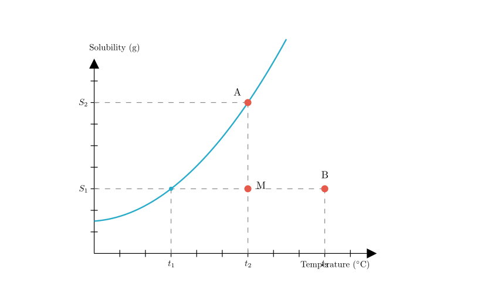
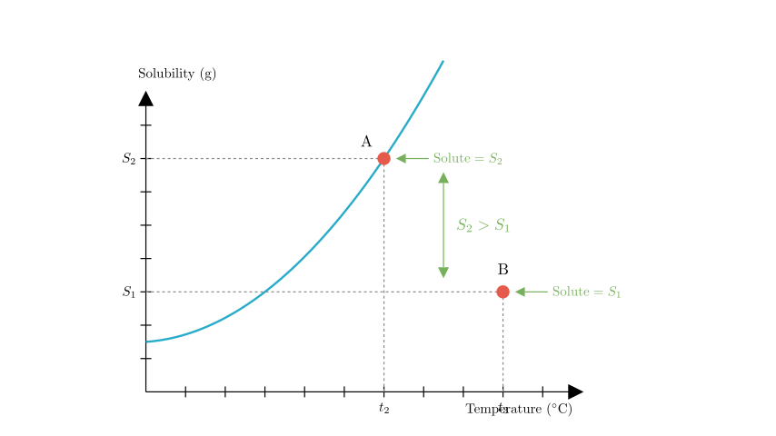
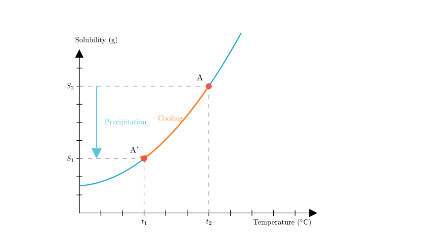
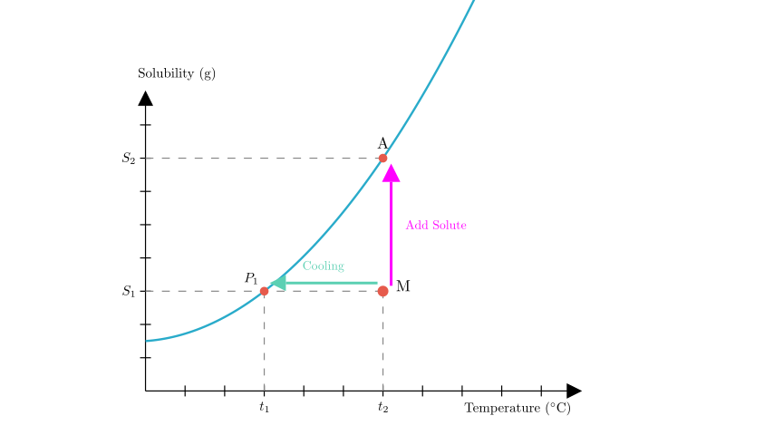

Problem Statement:
The solubility curve of a solid substance is shown in the figure. Based on the figure, answer the following questions:
(1) The meaning of point B: It represents that at $t_3^\circ$C, an unsaturated solution is formed by dissolving $S_1$g of solute in 100g of solvent. The meaning of point A: $\underline{\hspace{3cm}}$. The expression for the mass fraction of the solute in this solution is $\underline{\hspace{3cm}}$.
(2) If 20g of water is added to the solutions at points A and B respectively while maintaining the temperature, the solubility at point A will $\underline{\hspace{2cm}}$ (fill in "increase", "decrease", or "remain unchanged"); the solute mass fraction of A compared to B is $\underline{\hspace{2cm}}$ (fill in "former is larger", "latter is larger", or "equal").
(3) When the temperature is lowered, how does the mass fraction of the solution at point A change compared to the original after the change? $\underline{\hspace{2cm}}$ (fill in "increase", "decrease", or "unchanged").
(4) Methods to make the $(100+S_1)$g solution at point M saturated: cool down to $\underline{\hspace{1cm}}^\circ$C; add solute $\underline{\hspace{1cm}}$g and $\underline{\hspace{3cm}}$.
Solution Approach: We will analyze the solubility curve to determine the saturation state of points A, B, and M. We will use the definitions of solubility (g solute / 100g solvent) and mass fraction ($\frac{\text{solute}}{\text{solution}}$) to answer questions about dilution, cooling, and saturation methods.

Part (1): Interpreting Point A
Meaning of Point A: Point A lies exactly on the solubility curve at temperature $t_2^\circ$C. - Any point on the curve represents a saturated solution. - The y-coordinate corresponds to $S_2$. - Therefore, Point A represents a saturated solution at $t_2^\circ$C containing $S_2$g of solute dissolved in 100g of solvent.
Mass Fraction Expression: The mass fraction of the solute is the ratio of the solute's mass to the total solution mass. - Mass of solute = $S_2$ g - Mass of solvent = $100$ g - Total mass of solution = $100 \text{ g} + S_2 \text{ g}$
Formula: $$ \text{Mass Fraction} = \frac{\text{Mass of Solute}}{\text{Mass of Solution}} \times 100\% = \frac{S_2}{100 + S_2} \times 100\% $$

Part (2): Adding Water (Dilution)
Solubility Change: - Solubility is an intrinsic property of a substance that depends only on temperature (and pressure for gases), not on the amount of solvent or solution. - Since the temperature remains constant at $t_2$ (for A) and $t_3$ (for B), the solubility at Point A remains unchanged.
Comparing Mass Fractions: We add 20g of water to both solutions. - Solution A: Originally had $S_2$g solute in 100g water. Now has $S_2$g solute in 120g water. - Solution B: Originally had $S_1$g solute in 100g water. Now has $S_1$g solute in 120g water.
Comparing the two: $$ \text{Mass Fraction A} \approx \frac{S_2}{120 + S_2} $$ $$ \text{Mass Fraction B} \approx \frac{S_1}{120 + S_1} $$
From the graph (see Scene 2), $S_2$ is vertically higher than $S_1$, so $S_2 > S_1$. Therefore, the mass fraction of A is larger.
Answer: former is larger.

Part (3): Cooling Solution A
Answer: The mass fraction will decrease.

Part (4): Making Solution M Saturated
Point M represents a solution at $t_2^\circ$C with $S_1$g of solute in 100g of solvent. It is below the curve, meaning it is unsaturated. To make it saturated (reach the curve), we have two main strategies:
Method 1: Change Temperature (Horizontal Movement) - Look to the left of M. The horizontal line at solubility $S_1$ intersects the curve at temperature $t_1$. - Therefore, cooling the solution from $t_2$ to $t_1$ will make it saturated.
Method 2: Add Solute (Vertical Movement) - Look directly above M at temperature $t_2$. The saturation point is A, which corresponds to solubility $S_2$. - Current solute mass = $S_1$ g. - Required solute mass = $S_2$ g. - Amount to add = $(S_2 - S_1)$ g.
Method 3: Evaporate Solvent - The question asks for "add solute ... and ...". The third common method to saturate a solution is to evaporate solvent at a constant temperature. This removes water, increasing the concentration until it hits the saturation limit.
Final Answers Recap: (1) Saturated solution containing $S_2$g solute in 100g solvent; $\frac{S_2}{100+S_2} \times 100\%$ (2) remain unchanged; former is larger (3) decrease (4) $t_1$; $(S_2 - S_1)$; evaporate solvent